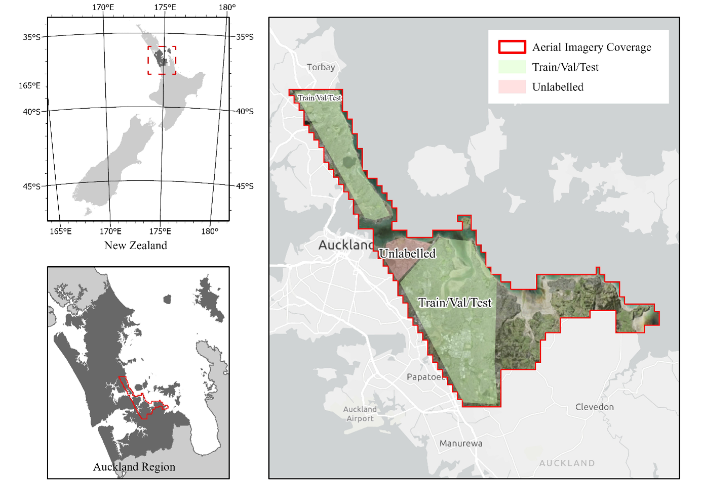
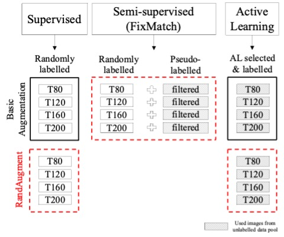
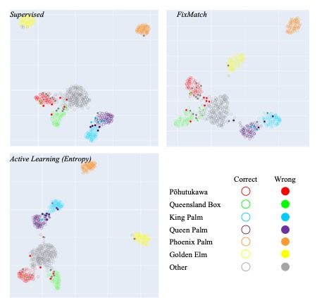
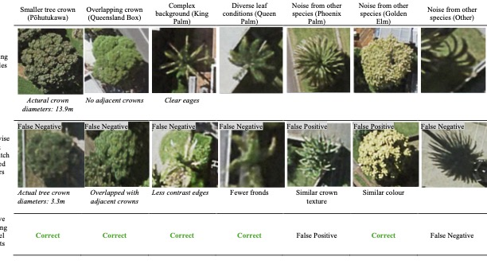
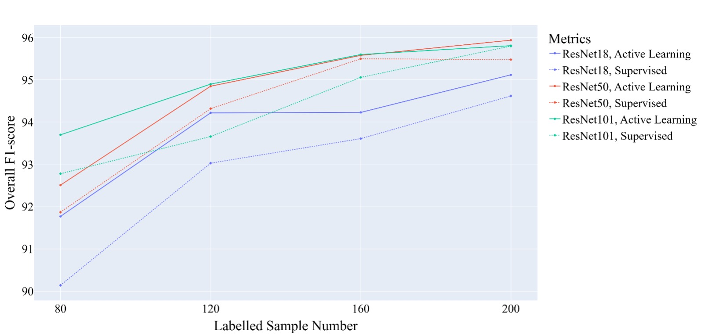

Urban Individual Tree Species Identification from Aerial Imagery via Deep Active Learning
This study develops a two-stage framework for multi-species Individual Tree Detection and Crown Delineation (ITDCD) using aerial RGB imagery. It combines automated crown detection and species classification to reduce annotation costs and improve generalisability.
1. Study Area and Data
The research used RGB aerial imagery of diverse urban tree environments. Cropped crown images were automatically extracted from detection results for use in species classification.

2. Framework Overview
The framework consists of two key stages:
Tree Detection: Detect individual crowns using trained ITDCD models.
Species Classification: Apply supervised, semi-supervised (FixMatch), and active learning to classify crown images into seven species categories.

3. Key Findings
Increasing labelled samples alone did not guarantee higher accuracy — consistent with results from Study 1.
FixMatch self-training improved performance moderately under low-data conditions.
Active learning (entropy-based sampling) outperformed other methods, efficiently identifying informative samples for training.

AMost classification errors occurred in images with crown appearances unlike the training data—such as small, overlapping, or noisy crowns—but active learning models correctly classified many of these challenging cases.

4. Results Summary
Using the full dataset and active learning:
Overall F1-score: 94.94%
Class-wise F1: 91.17%–99.63%
Seven target classes including three deciduous, three evergreen, and one mixed ‘other’ class.

5. Conclusions
Deep active learning provides a scalable and data-efficient solution for multi-species urban tree mapping. By integrating automated detection with entropy-based sample selection, this study demonstrates that urban forest classification can achieve high accuracy with significantly fewer labelled samples.